実施した改善内容をスクリーンショット付きでまとめています
2025-2026 UPDATE LOG
スマートフォン表示の全体的なレイアウト・サイズ・余白を最適化しました。
各セクションの文字サイズ、パディング、カード表示をモバイルに最適な形へ調整しています。
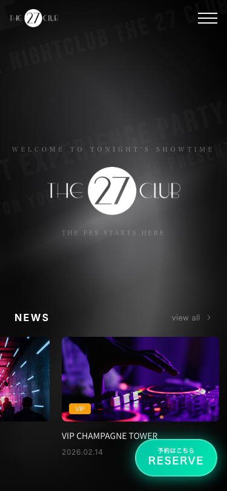
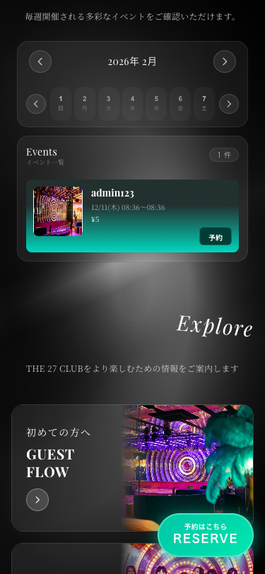
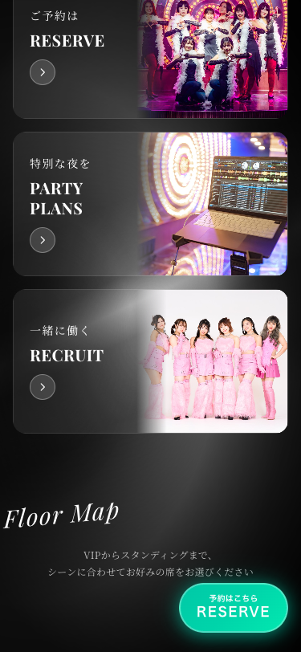
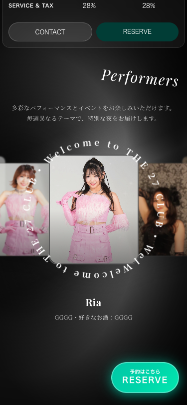
ファーストビュー（FV）の中央にTHE 27 CLUBのロゴを大きく配置。
背景にはタイポグラフィアニメーションを敷き、ホバー時に明るくなる演出を追加。
サブタイトル「Welcome to Tonight's SHOWTIME」やキャッチコピーも配置しています。
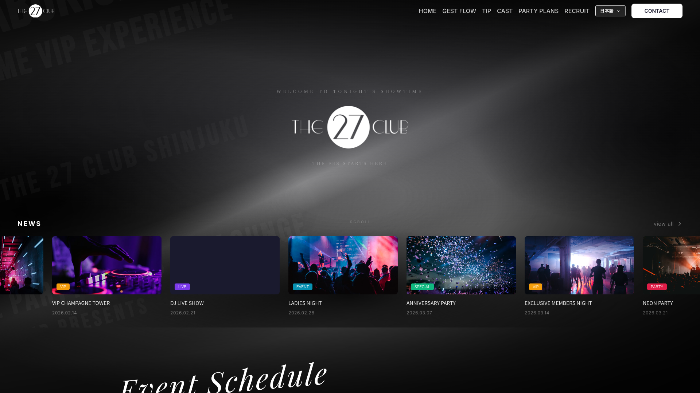
/img/27logo-1-1.png を中央に配置
SP版のFV下部にあるニュース（NEWS / Instagram連携）カードスライダーの位置を調整。
画面下部の bottom: 8px にニュースセクションを配置し、PCとSPで異なるパディングを設定。
自動スクロール、ドラッグ操作、タッチスワイプに対応しています。
bottom-8 / PC版: bottom-0 で位置を差別化
各セクションタイトル（Explore、Floor Map、Access、About This Venue）のフォントサイズを
レスポンシブに設定。SP版では text-3xl、タブレットでは text-5xl、PCでは最大 90px まで。
Playfair Display フォントによるイタリック・斜め表示のデザインを採用しています。
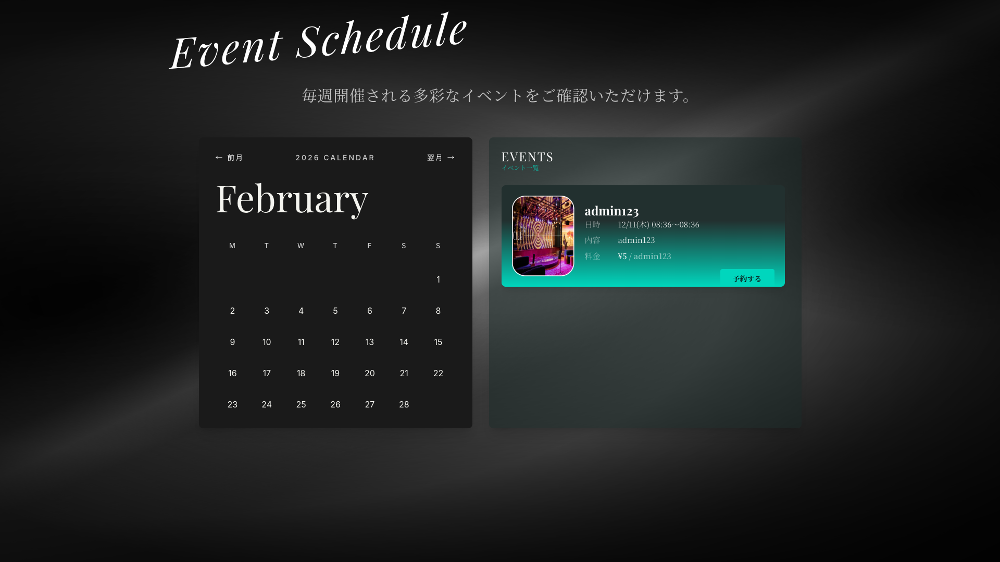
text-3xl md:text-5xl lg:text-7xl xl:text-[90px]rotate(±5deg) skewX(±5deg) の変形を適用text-xs md:text-xl lg:text-2xl
Exploreセクションの2番目のカードを「TIP（チップについて）」から「予約（RESERVE）」に変更。
リンク先を /reserve に変更し、タイトル・サブタイトルも予約向けに更新しました。
/チップについて → 変更後: /reserve
フロアマップ上の座席エリアをクリックすると、下部の座席詳細情報（画像 + 料金表）部分へ
スムーズスクロールで移動するように実装。useRef と scrollIntoView を使用。
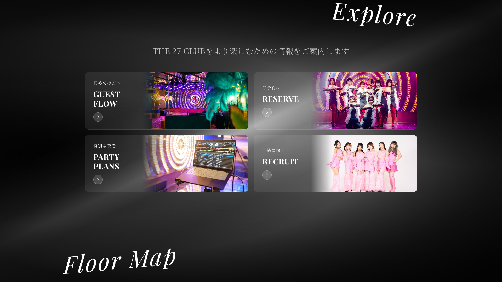
detailRef を座席詳細エリアに設定し、scrollIntoView({ behavior: "smooth", block: "start" }) で遷移isInitialMount ref使用）
Accessセクション内のGoogle Maps埋め込みURLとYouTubeリンクを最新のものに更新。
YouTube CTAは @the27clubtokyo チャンネルへのリンクに変更しました。
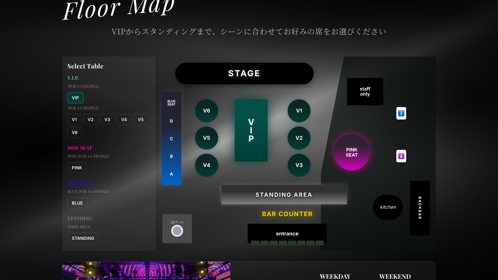
https://www.youtube.com/@the27clubtokyo へリンク
About This Venueセクションから遷移する4つの詳細ページを新規作成しました。
各ページにはヒーロー画像、説明文、ギャラリー、CTAボタンが含まれています。
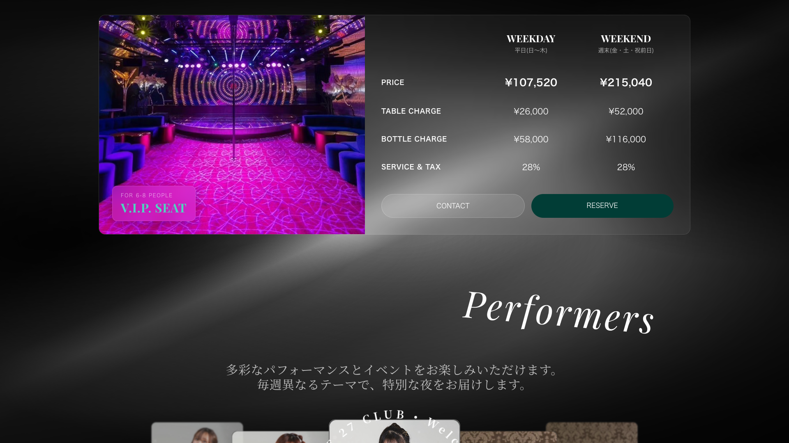
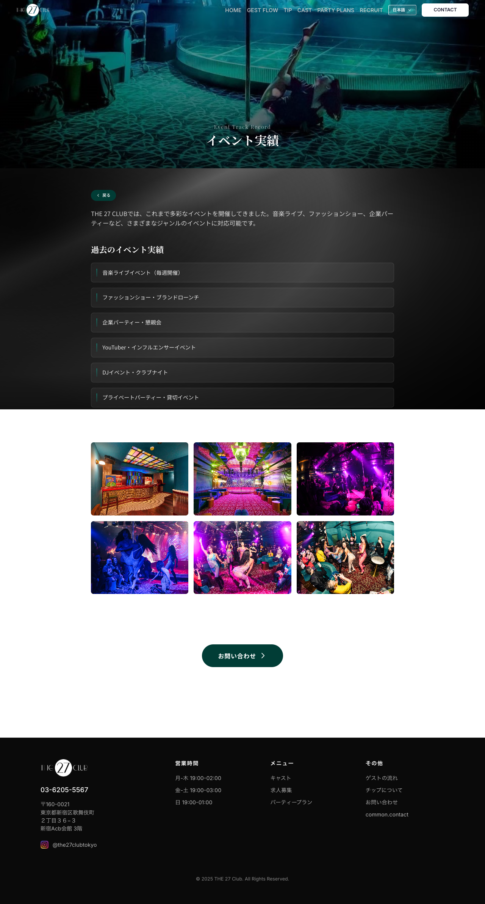
/about/events
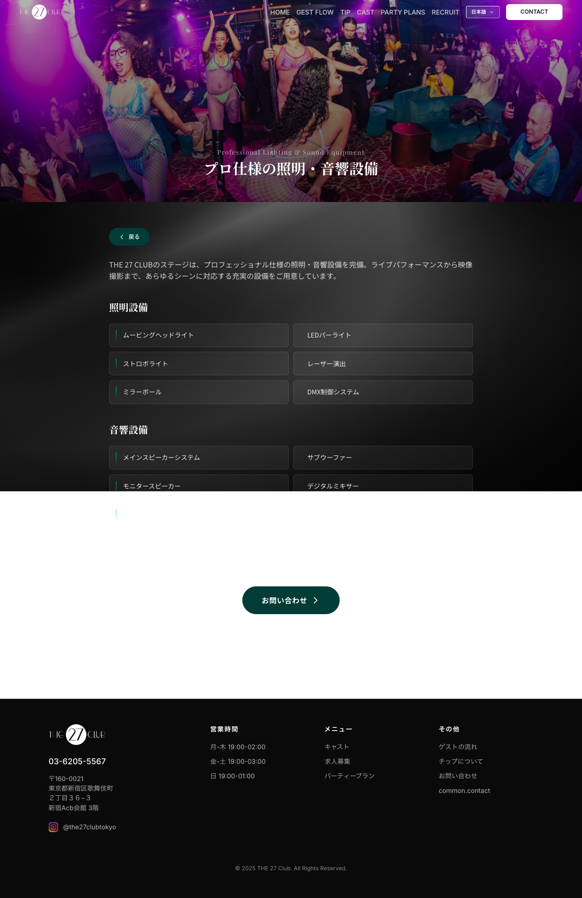
/about/equipment
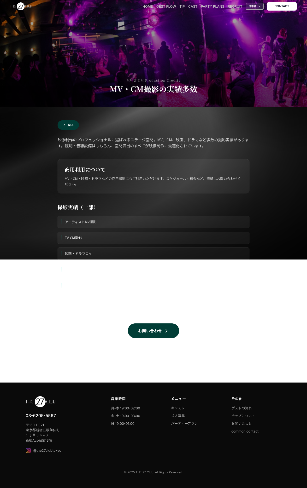
/about/mv-cm
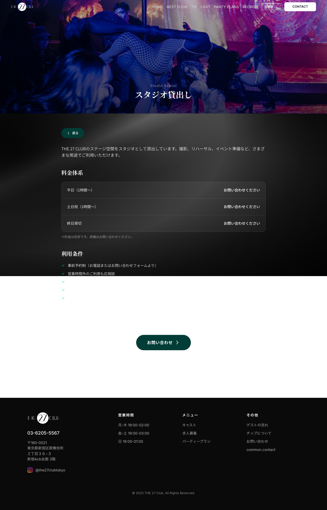
/about/studio-rental
/about/events - イベント実績ページ: 過去のイベント一覧、ギャラリー、お問い合わせCTA/about/equipment - プロ仕様の照明・音響設備ページ: 設備詳細、仕様情報/about/mv-cm - MV・CM撮影の実績多数ページ: 撮影実績、利用事例/about/studio-rental - スタジオ貸し出しページ: レンタル情報、料金、予約